Association Rule Mining
Apriori · FP-Tree · FP-Growth
Bahan belajar UAS Data Mining — Pertemuan 8 (Politeknik Statistika STIS)
1. Pendahuluan
- Contoh: seberapa besar kemungkinan pelanggan membeli roti bersamaan dengan susu.
- Terkenal lewat aplikasi analisis isi keranjang belanja di pasar swalayan → disebut juga market basket analysis.
- Dicetuskan oleh Agrawal dkk. (1993).
- Termasuk teknik dasar dari teknik data mining lain; tahap khususnya: analisis pola frekuensi tinggi (frequent pattern mining).
Manfaat bagi pemilik swalayan
- Mengatur penempatan barang
- Merancang kampanye pemasaran (kupon diskon untuk kombinasi barang tertentu)
- dll.
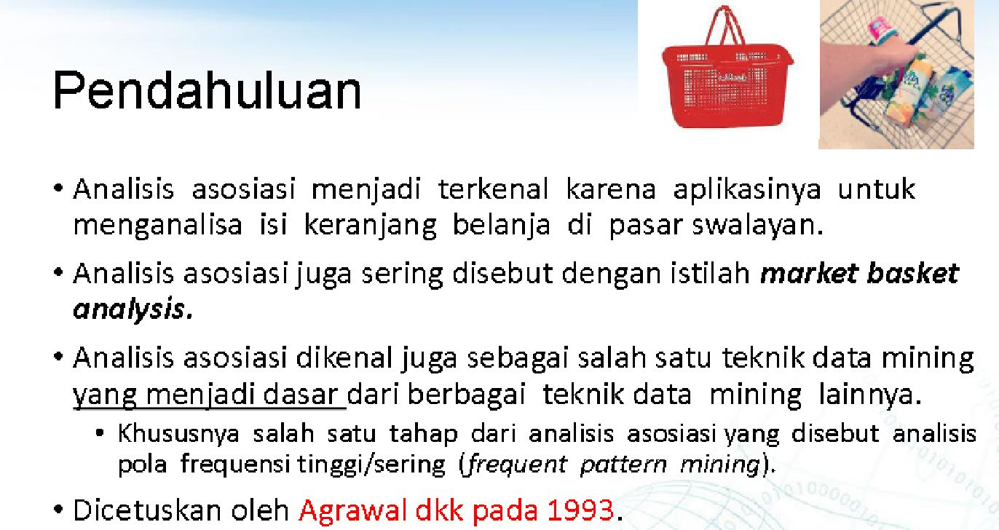
2. Terminologi
Data historis (data latihan / training data, data pengalaman) dipakai algoritma untuk menemukan pengetahuan: item-item belanja yang sering dibeli secara bersamaan.
Penting-tidaknya aturan asosiatif diukur dengan dua parameter:
Persentase kombinasi item tersebut dalam database.
Kuatnya hubungan antar item dalam aturan asosiatif.
Bentuk aturan: "if … then …" / "jika … maka …".
- 50% dari transaksi yang memuat roti & mentega juga memuat susu.
- 40% dari seluruh transaksi memuat ketiga item itu.
Analisis asosiasi = proses menemukan semua aturan asosiatif yang memenuhi syarat minimum support (minimum support) dan minimum confidence.
Notasi & definisi
| Simbol | Arti |
|---|---|
| $I$ | Himpunan seluruh item. Mis. {Asparagus, Beans, …, Tomatoes} |
| $D$ | Himpunan seluruh transaksi. Mis. {T1, T2, …, T14} |
| Item set | Himpunan item / item-item di $I$. Mis. $A=\{a,b,c\}$ → {a},{b},{c},{a,b},{a,c},{b,c} |
| Proper subset | Himpunan bagian murni (tanpa himpunan itu sendiri). Untuk $A=\{a,b,c\}$: ∅, 1 unsur, 2 unsur |
| $k$-item set | Item set yang terdiri dari $k$ item. Mis. 3-itemset = 3 item |
| Frekuensi item set | Jumlah transaksi di $D$ yang memuat item set tertentu |
| Frequent item set | Item set yang muncul ≥ "sekian" kali di $D$ ("sekian" disimbolkan $\Phi$) |
| $F_k$ | Himpunan semua frequent item set yang terdiri dari $k$ item |
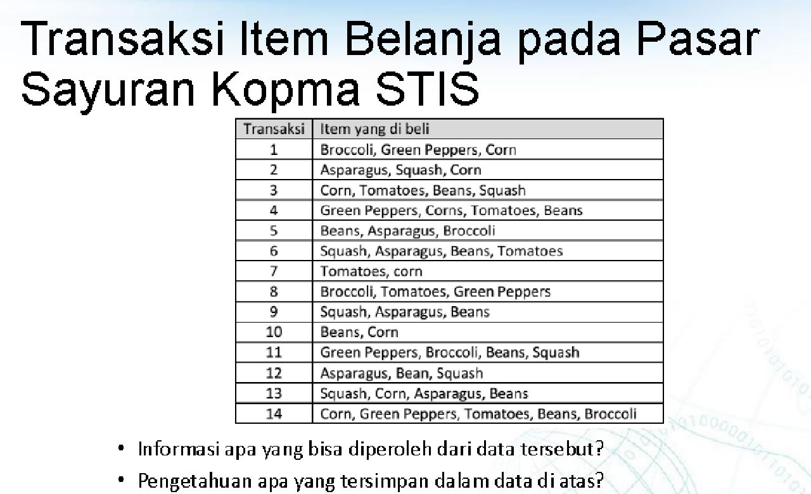
Contoh frequent: $\Phi=3$; {Asparagus, Beans} dibeli bersama 5 kali, $5\ge3$ → frequent item set.
3. Metodologi: Support & Confidence
Dua tahap utama:
- Analisis pola frekuensi tinggi (frequent pattern mining) — cari kombinasi item yang memenuhi minimum support.
- Pembentukan aturan asosiatif — dari frequent itemset cari aturan yang memenuhi minimum confidence.
Bentuk setara (versi slide pembentukan aturan):
4. Algoritma Apriori
Langkah umum
- Tentukan $\Phi$ (minimum support count).
- Tentukan semua frequent item set.
- Untuk setiap frequent item set: ambil sebuah unsur $s$; sisanya $ss-s$; masukkan ke rule If ($ss-s$) then $s$. Lakukan untuk semua unsur.
Aturan Apriori (anti-monotone)
Dipakai untuk meringankan pencarian $F_3,F_4,F_5,\dots$ → candidate yang punya subset tidak frequent langsung dibuang (pruning).
Penggabungan (join) kandidat
- Kombinasi itemset di $F_{k-1}$ digabung menjadi calon $k$-itemset.
- Itemset yang digabung harus punya kesamaan pada item-item pertamanya (semua kecuali item terakhir). Mis. {A,B} dan {A,F} sama di item pertama A → jadi {A,B,F}.
5. Contoh Apriori Lengkap (10 transaksi, A–G)
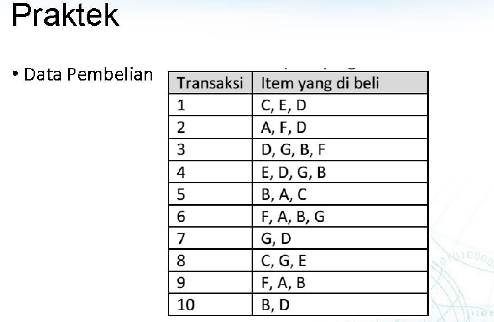
Langkah 1–2: tabel biner & hitung tiap item
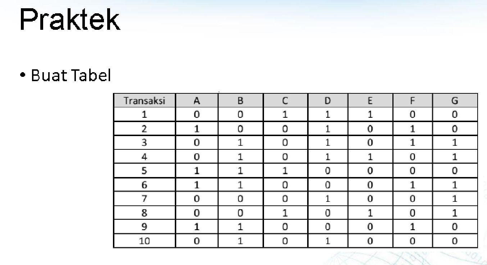
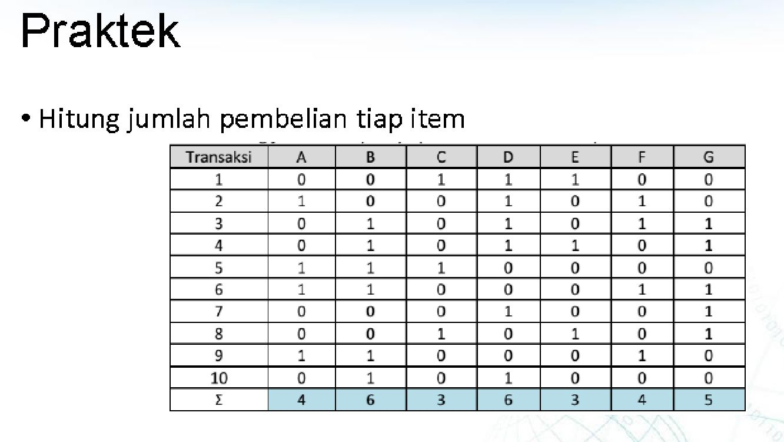
Ditetapkan $\Phi=3$ → semua item ≥ 3, maka
$$F_1=\{\{A\},\{B\},\{C\},\{D\},\{E\},\{F\},\{G\}\}$$Slide juga menyebut "minimum support 70%" sebagai ilustrasi, tetapi perhitungan memakai $\Phi=3$ (support count).
Langkah 3: calon 2-itemset
Semua pasangan: AB, AC, AD, AE, AF, AG, BC, BD, BE, BF, BG, CD, CE, CF, CG, DE, DF, DG, EF, EG, FG. Tiap pasangan dibuatkan tabel; P = dibeli bersama, S = tidak bersama; Σ = frekuensi pasangan.
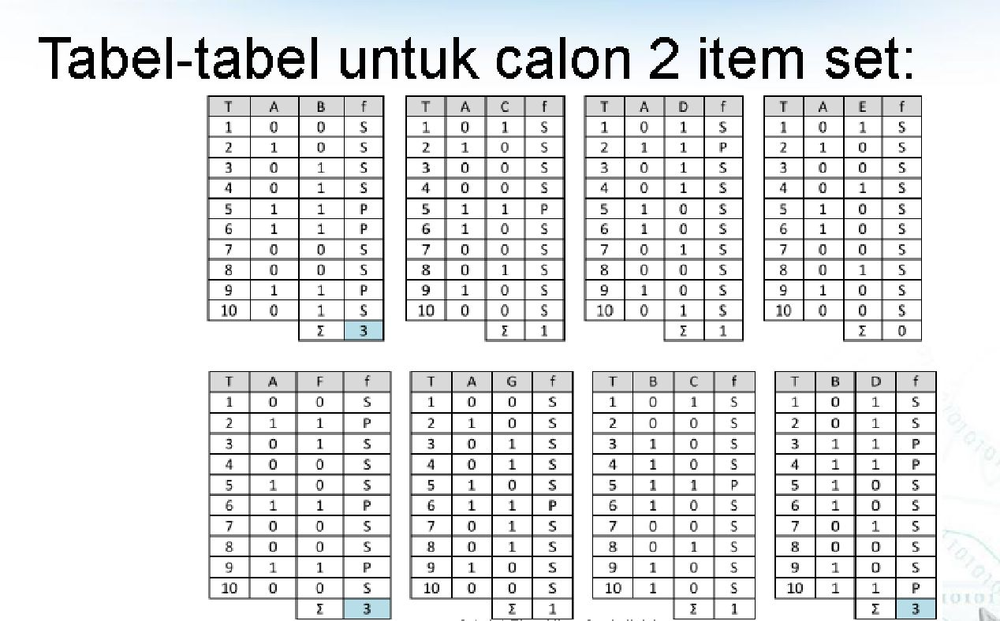
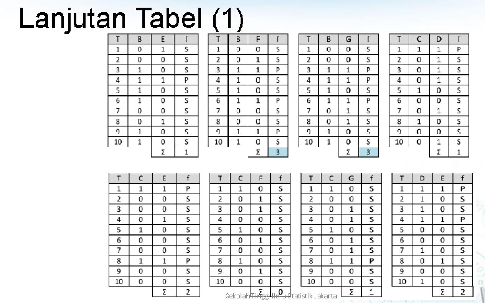
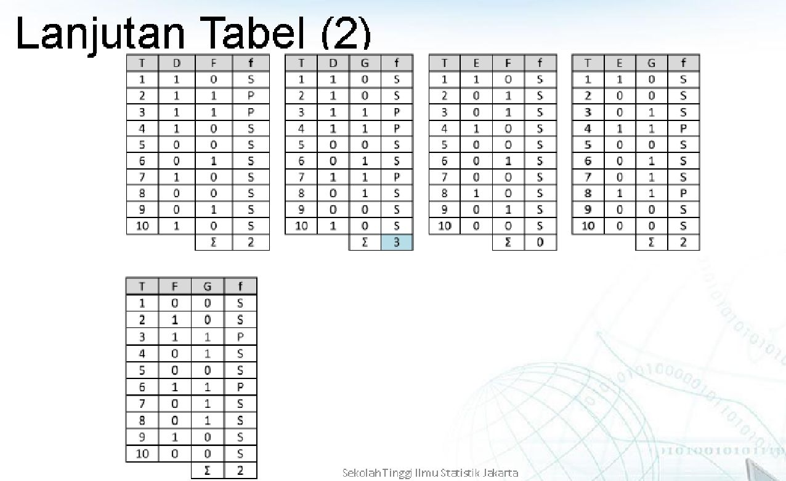
| Pasangan | AB | AC | AD | AE | AF | AG | BC | BD | BE | BF | BG |
|---|---|---|---|---|---|---|---|---|---|---|---|
| Σ | 3 | 1 | 1 | 0 | 3 | 1 | 1 | 3 | 1 | 3 | 3 |
| Pasangan | CD | CE | CF | CG | DE | DF | DG | EF | EG | FG | |
| Σ | 1 | 2 | 1 | 1 | 2 | 2 | 3 | 0 | 2 | 2 |
Yang $\Sigma\ge\Phi=3$:
$$F_2=\{\{A,B\},\{A,F\},\{B,D\},\{B,F\},\{B,G\},\{D,G\}\}$$Langkah 4: calon 3-itemset
Gabungkan itemset yang punya item pertama sama: {A,B}+{A,F}→{A,B,F}; {B,D}+{B,F}→{B,D,F}; {B,D}+{B,G}→{B,D,G}; {B,F}+{B,G}→{B,F,G}.
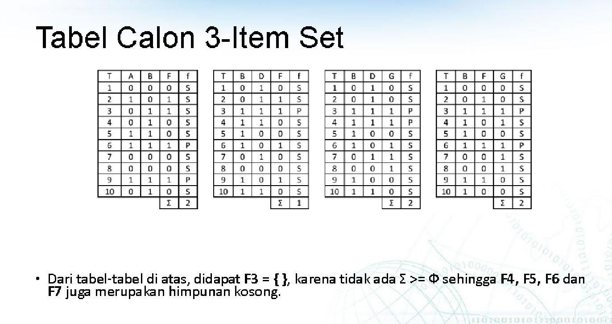
6. Pembentukan Aturan Asosiasi
$F_1$ tidak dipakai (hanya 1 item). Dari $F_2$ tiap pasangan menghasilkan 2 rule (bolak-balik) → 6 pasangan × 2 = 12 rule.
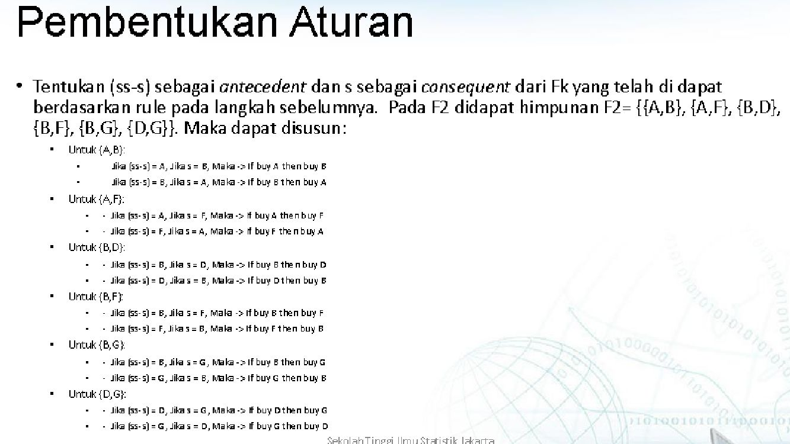
Hitung support & confidence
3 transaksi memuat A & B (T5, T6, T9); transaksi yang memuat A ada 4 (T2, T5, T6, T9).
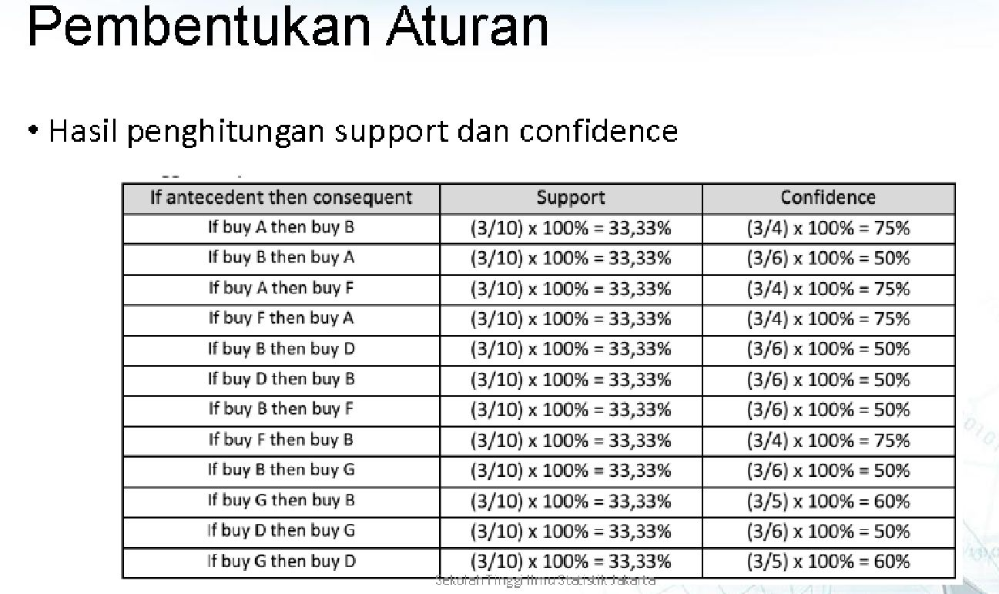
| Rule | Support | Confidence | Sup × Conf |
|---|---|---|---|
| If A then B | 33,33% | 3/4 = 75% | 0,249975 |
| If B then A | 33,33% | 3/6 = 50% | — |
| If A then F | 33,33% | 3/4 = 75% | 0,249975 |
| If F then A | 33,33% | 3/4 = 75% | 0,249975 |
| If B then D | 33,33% | 3/6 = 50% | — |
| If D then B | 33,33% | 3/6 = 50% | — |
| If B then F | 33,33% | 3/6 = 50% | — |
| If F then B | 33,33% | 3/4 = 75% | 0,249975 |
| If B then G | 33,33% | 3/6 = 50% | — |
| If G then B | 33,33% | 3/5 = 60% | — |
| If D then G | 33,33% | 3/6 = 50% | — |
| If G then D | 33,33% | 3/5 = 60% | — |
Ambil rule dengan confidence ≥ 70%, lalu hitung support × confidence; yang terbesar dipakai sebagai rule saat menjual.
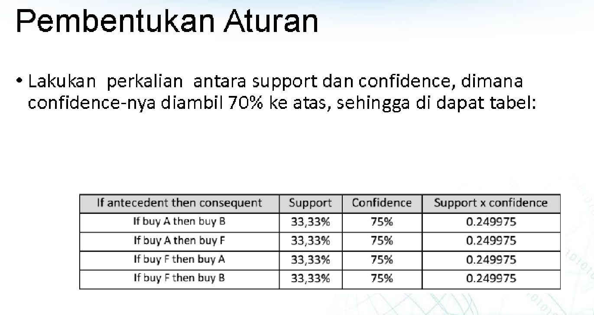
Karena keempatnya sama (0,249975), semuanya jadi rule:
- Jika membeli A maka akan membeli B (support 33,33%, confidence 75%)
- Jika membeli A maka akan membeli F (33,33%; 75%)
- Jika membeli F maka akan membeli A (33,33%; 75%)
- Jika membeli F maka akan membeli B (33,33%; 75%)
7. FP-Tree (Frequent Pattern Tree)
Mengapa FP-Tree?
- Apriori kurang baik bila banyak frequent pattern, banyak jenis item, namun minimum support rendah.
- Apriori lambat karena scanning database berulang-ulang.
- FP-Tree dirancang mengatasi bottleneck penggalian data pada Apriori. Dicetuskan Zhao et al. (2003) (sesuai slide).
Ide / gagasan
- Pemampatan data dengan struktur pohon → menghindari scanning database berulang.
- Tidak memerlukan candidate generation.
- Dilanjutkan algoritma FP-Growth yang langsung mengekstrak frequent itemset dari FP-Tree dengan prinsip divide and conquer.
Definisi FP-Tree
- Terdiri atas root berlabel 'null', sekumpulan subtree sebagai child root, dan sebuah tabel frequent header.
- Setiap node mengandung 3 informasi:
- label item – jenis item yang diwakili node,
- support count – jumlah lintasan transaksi yang melalui node,
- pointer penghubung – menghubungkan node berlabel sama antar-lintasan (garis panah putus-putus).
- Tiap baris tabel frequent header = label item + head of nodelink (menunjuk node pertama berlabel item itu di FP-Tree).
Ukuran FP-Tree
- Biasanya lebih kecil dari data asli (banyak transaksi berprefix sama).
- Best case: semua transaksi berisi item sama → 1 path.
- Worst case: tiap transaksi unik → ukuran = data asli, bahkan kebutuhan simpan lebih besar (pointer & counter).
- Bergantung urutan item. Urut berdasar support menurun biasa dipakai, tapi tidak selalu menghasilkan tree terkecil (heuristik).
Dua tahap FP-Growth: (1) bentuk FP-Tree, (2) ekstrak frequent itemset dari FP-Tree dengan FP-Growth.
8. Membangun FP-Tree (Contoh min support count = 2)
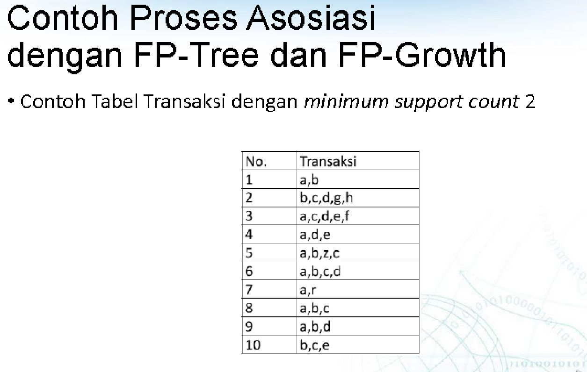
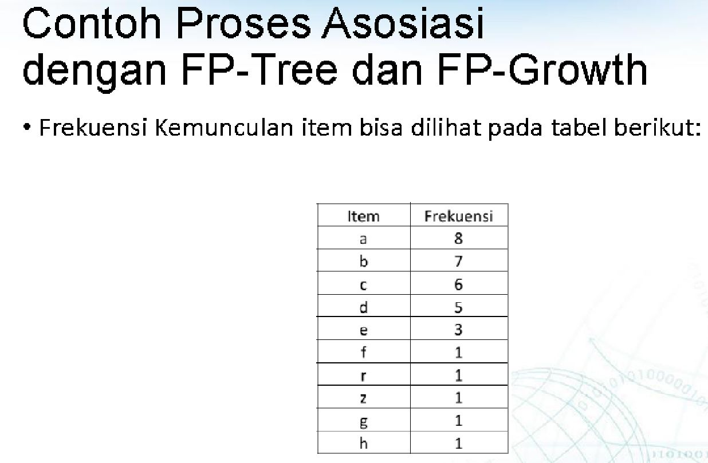
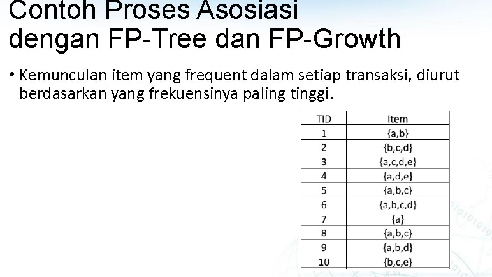
- T1 {a,b}: buat node a, b; path null→a→b; count 1.
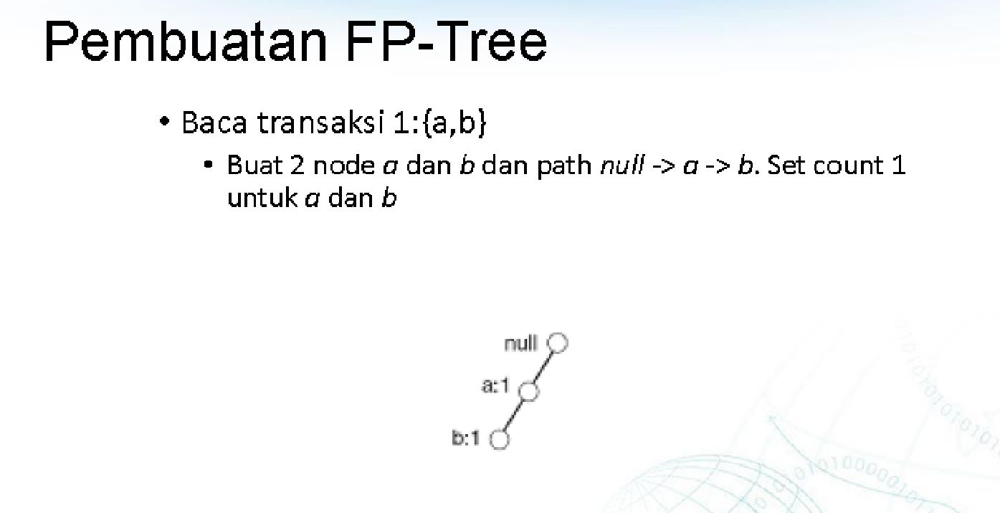
- T2 {b,c,d}: buat 3 node b,c,d; path null→b→c→d; count 1. Walau T1 dan T2 sama-sama punya b, path disjoint karena prefix berbeda. Tambahkan link antar b.
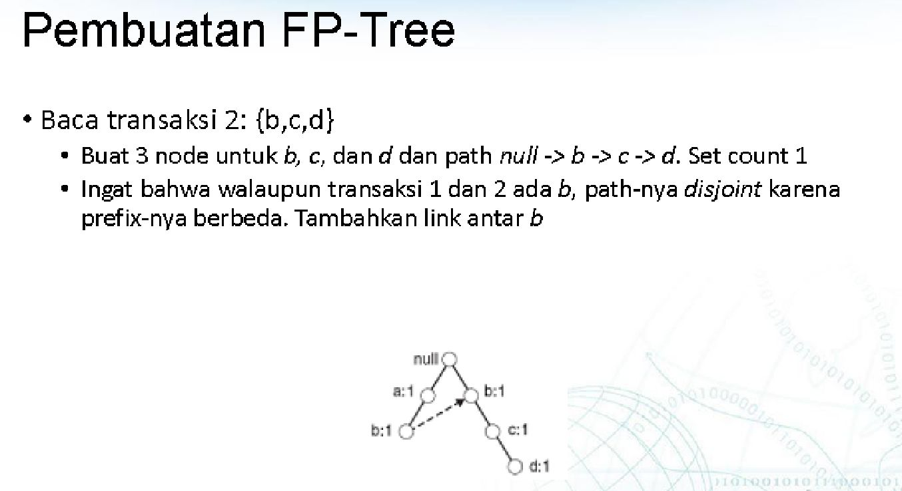
- T3 {a,c,d,e}: prefix a sama dengan T1 → path overlap, count a bertambah (a:2). Tambah link antar c dan antar d.
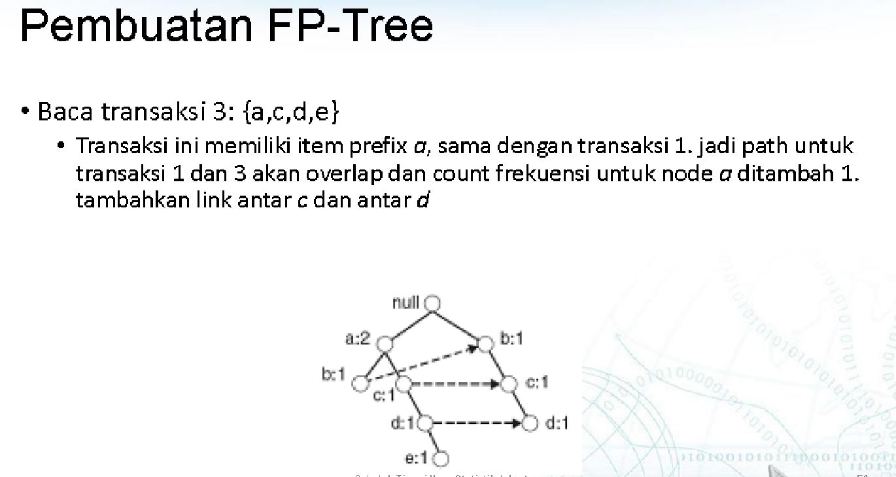
- Lanjutkan sampai semua transaksi terpetakan. Hasil akhir FP-Tree:
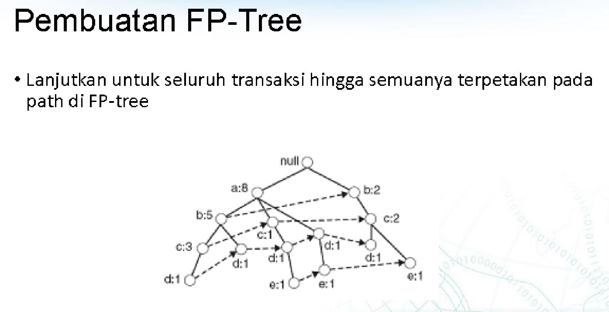
FP-Tree lengkap: a:8, b:5 (di bawah a), b:2, c:3, c:1, c:2, dst.
9. Algoritma FP-Growth
Tiga tugas utama
- Pembangkitan Conditional Pattern Base — subdatabase berisi prefix path (lintasan prefix) dan suffix pattern (pola akhiran), didapat dari FP-Tree yang telah dibangun.
- Pembangkitan Conditional FP-Tree — support count tiap item di conditional pattern base dijumlahkan; item dengan support count ≥ minimum support count dibangkitkan dengan conditional FP-Tree.
- Pencarian frequent itemset — bila conditional FP-Tree berupa lintasan tunggal (single path), frequent itemset diperoleh dengan mengombinasikan item pada conditional FP-Tree. Jika bukan single path, lakukan FP-Growth secara rekursif.
Sifat
- Mengekstrak frequent itemset dari FP-Tree.
- Algoritma bottom-up — dari leaf menuju root.
- Divide and conquer: pertama cari frequent itemset yang berakhir di e, kemudian de, dst.; lalu d, kemudian cd, dst.
- Pertama ekstrak prefix path sub-tree yang berakhir di item (set).
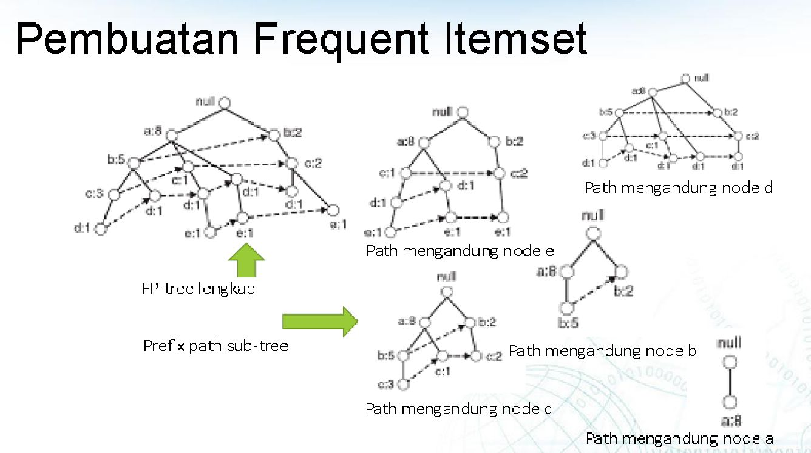
Setiap prefix path sub-tree diproses rekursif, hasil akhirnya digabung (merged). Mis. sub-tree untuk e dipakai mengekstrak itemset yang berakhir di e, lalu de, ce, be, ae; kemudian cde, bde, ade, dst.
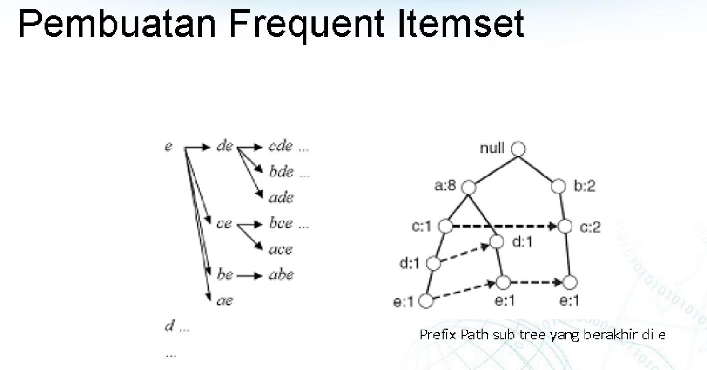
10. Contoh: Conditional FP-Tree untuk e (min support = 2)
- Buat prefix path sub-tree untuk e.
- Cek apakah e frequent dengan menjumlahkan seluruh count pada garis putus-putus node e: 1+1+1 = 3 ≥ 2 → {e} diekstrak sebagai frequent itemset.
- Karena e frequent, cari frequent itemset yang berakhir di e: de, ce, be, ae secara rekursif. Untuk itu perlu conditional FP-Tree untuk e terlebih dahulu.
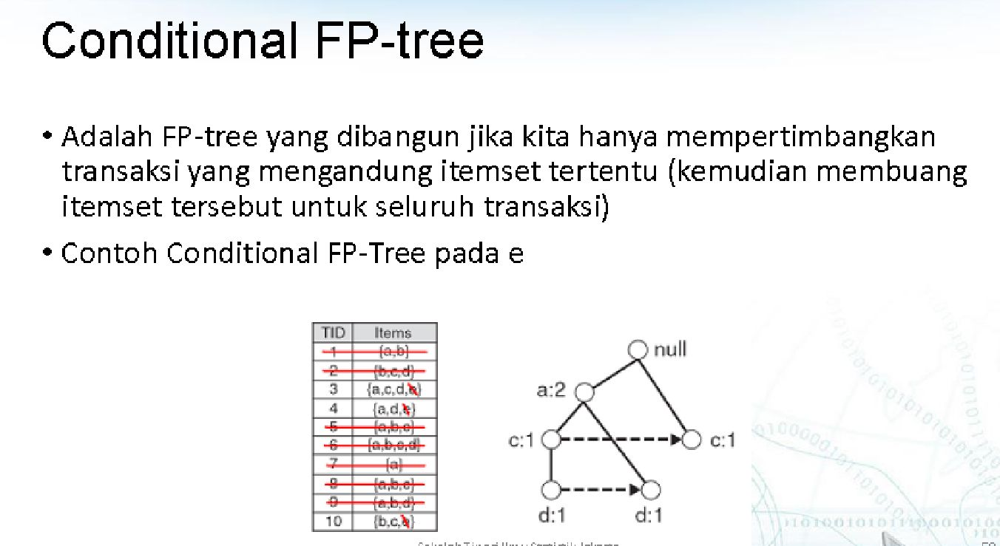
Cara membuat conditional FP-Tree untuk e
- Update support count pada prefix path agar menggambarkan jumlah transaksi yang mengandung e. Di contoh: b dan c di-set ke 1, a ke 2.
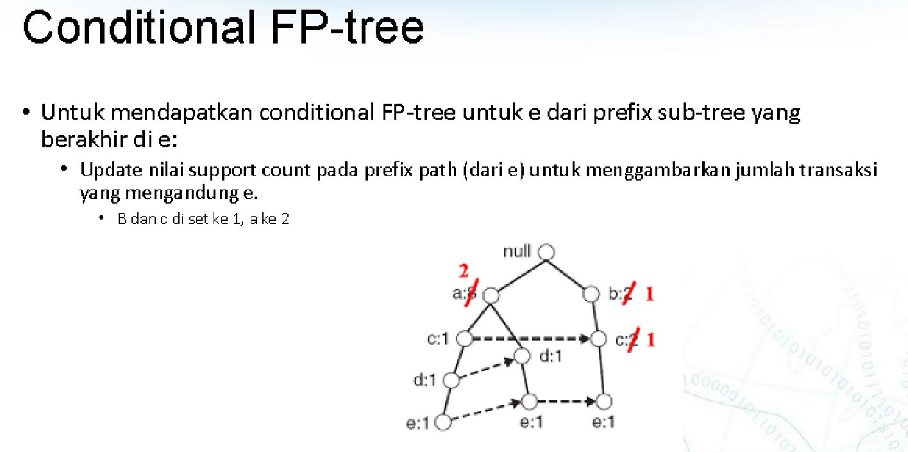
- Hilangkan node e (informasi tentang e tidak dibutuhkan lagi).
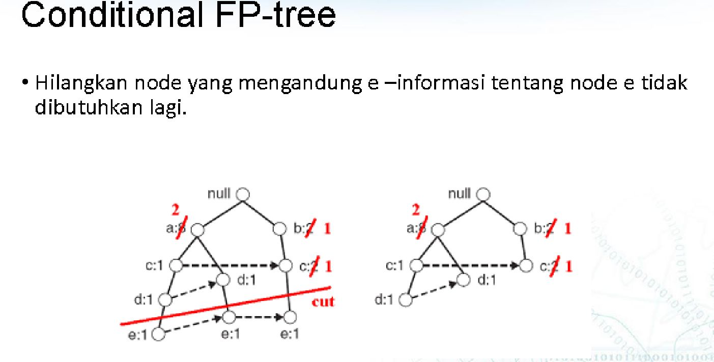
- Hilangkan item tak sering dari prefix path. b hanya punya support 1 (<2) → be tidak sering → b dibuang.
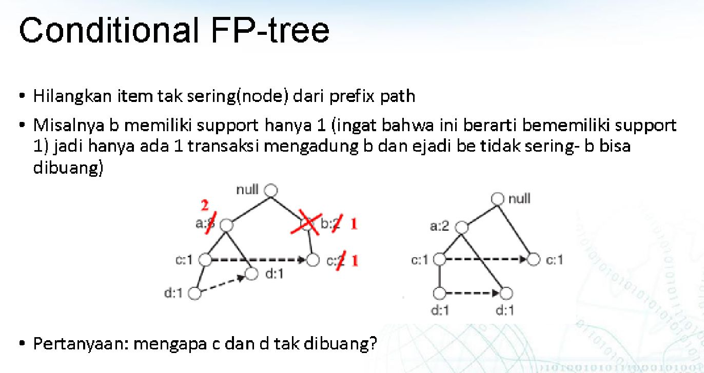
Pertanyaan slide: mengapa c dan d tidak dibuang? Karena c: 1+1 = 2 dan d: 1+1 = 2, keduanya ≥ minimum support 2. - Gunakan conditional FP-Tree e untuk menemukan itemset berakhiran de, ce, ae (be tidak dianggap karena b tidak ada di conditional tree e). Untuk tiap akhiran: cari prefix path, ekstrak frequent itemset, buat conditional FP-Tree, dst (rekursif). Mis. e → de → ade ({d,e}, {a,d,e} ditemukan frequent).
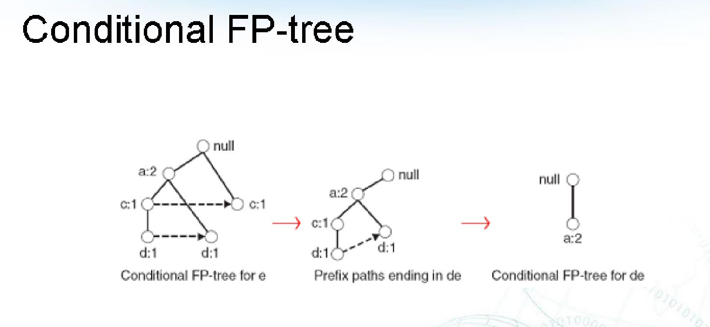
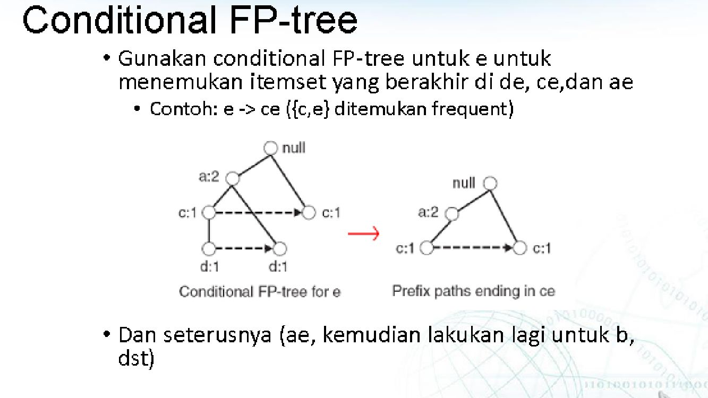
11. Hasil Akhir FP-Growth
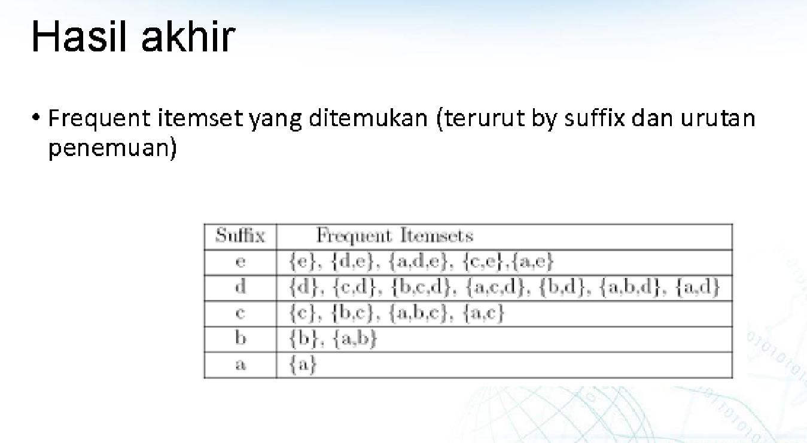
| Suffix | Frequent Itemsets |
|---|---|
| e | {e}, {d,e}, {a,d,e}, {c,e}, {a,e} |
| d | {d}, {c,d}, {b,c,d}, {a,c,d}, {b,d}, {a,b,d}, {a,d} |
| c | {c}, {b,c}, {a,b,c}, {a,c} |
| b | {b}, {a,b} |
| a | {a} |
12. Latihan + Pembahasan
Latihan 1 – Apriori data pasar sayuran Kopma STIS
Min support = 30%, min confidence = 70% (14 transaksi → min support count = $0{,}30\times14=4{,}2\Rightarrow\ge5$).
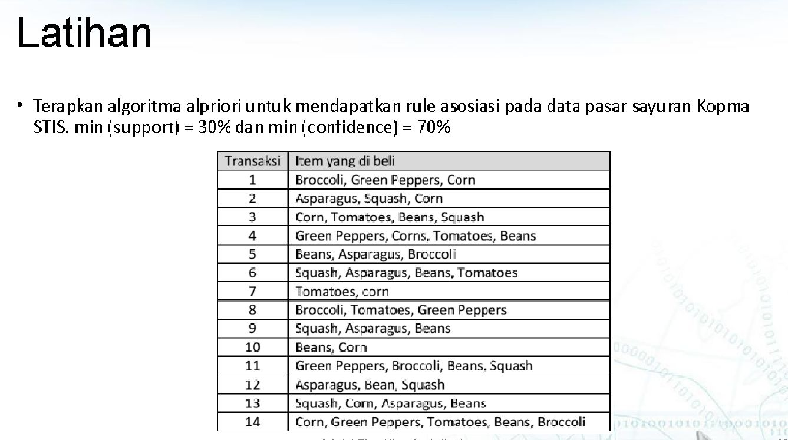
Pembahasan (dihitung ulang)
F1 (count): Asparagus 6, Beans 10, Broccoli 5, Corn 8, Green Peppers 5, Squash 7, Tomatoes 6 → semua ≥5, semua frequent.
2-itemset dengan count ≥ 5:
| Itemset | Count | Support |
|---|---|---|
| {Beans, Squash} | 6 | 42,86% |
| {Beans, Corn} | 5 | 35,71% |
| {Asparagus, Squash} | 5 | 35,71% |
| {Asparagus, Beans} | 5 | 35,71% |
Lainnya <5 (mis. {Beans,Tomatoes}=4, {Corn,Tomatoes}=4, {Broccoli,Green Peppers}=4). Calon 3-itemset {Asparagus, Beans, Squash} → count 4 (<5) → $F_3=\{\}$.
Rule (confidence):
| Rule | Support | Confidence | ≥70%? |
|---|---|---|---|
| Squash → Beans | 42,86% | 6/7 = 85,71% | ✓ |
| Beans → Squash | 42,86% | 6/10 = 60% | ✗ |
| Beans → Corn | 35,71% | 5/10 = 50% | ✗ |
| Corn → Beans | 35,71% | 5/8 = 62,5% | ✗ |
| Asparagus → Squash | 35,71% | 5/6 = 83,33% | ✓ |
| Squash → Asparagus | 35,71% | 5/7 = 71,43% | ✓ |
| Asparagus → Beans | 35,71% | 5/6 = 83,33% | ✓ |
| Beans → Asparagus | 35,71% | 5/10 = 50% | ✗ |
Rule akhir: Squash→Beans, Asparagus→Squash, Squash→Asparagus, Asparagus→Beans.
Kalau soal meminta pilih satu rule terbaik via support × confidence (cara slide): Squash→Beans = 0,4286×0,8571 = 0,367 → terbesar.
Latihan 2 – FP-Growth: mining pattern untuk item Grape (min support = 4)
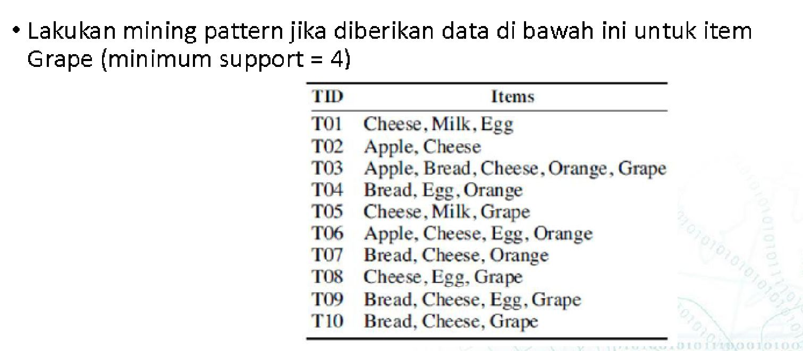
Pembahasan (dihitung ulang)
- Hitung support: Cheese 9, Bread 5, Egg 5, Grape 5, Orange 4, Apple 3, Milk 2.
Buang Apple & Milk (<4). Urutan: Cheese, Bread, Egg, Grape, Orange. - Transaksi terurut: T01 {Ch,Eg}; T02 {Ch}; T03 {Ch,Br,Gr,Or}; T04 {Br,Eg,Or}; T05 {Ch,Gr}; T06 {Ch,Eg,Or}; T07 {Ch,Br,Or}; T08 {Ch,Eg,Gr}; T09 {Ch,Br,Eg,Gr}; T10 {Ch,Br,Gr}.
- Prefix path berakhir di Grape (conditional pattern base): {Ch,Br}:1 (T03), {Ch}:1 (T05), {Ch,Eg}:1 (T08), {Ch,Br,Eg}:1 (T09), {Ch,Br}:1 (T10).
- Support count di conditional base: Cheese 5, Bread 3, Egg 2 → hanya Cheese ≥4. Conditional FP-Tree Grape:
null → Cheese:5(single path). - Frequent itemset berakhiran Grape: {Grape}:5 dan {Cheese, Grape}:5.
13. Apriori vs FP-Growth
| Aspek | Apriori | FP-Growth |
|---|---|---|
| Candidate generation | Ya (generate & test) | Tidak perlu |
| Scan database | Berulang tiap level $k$ | 2 kali (hitung item + bangun tree) |
| Struktur data | Tabel / himpunan kandidat | FP-Tree (pohon terkompresi) |
| Strategi | Level-wise (breadth), prinsip anti-monotone | Divide & conquer, bottom-up, rekursif |
| Kelemahan | Bottleneck; lambat jika support rendah / pola banyak | Tree bisa besar (worst case) & butuh memori pointer |
| Penemu (slide) | Agrawal dkk. (1993) | Zhao et al. (2003) |
14. Checklist Persiapan UAS
- ☐ Hafal rumus support, confidence, dan support × confidence.
- ☐ Bisa membedakan antecedent vs consequent; consequent hanya 1 unsur.
- ☐ Bisa menjalankan Apriori: $F_1\to F_2\to\dots$ sampai kosong; terapkan prinsip Apriori.
- ☐ Bisa menjumlah 2-itemset ($\binom{n}{2}$ pasangan) dan menghitung jumlah rule ($2\times|F_2|$).
- ☐ Bisa membangun FP-Tree: buang item < min, urutkan frekuensi menurun, tambah count bila prefix sama.
- ☐ Bisa membuat conditional pattern base & conditional FP-Tree untuk suatu suffix.
- ☐ Tahu alasan FP-Tree dibanding Apriori (tanpa candidate generation, hindari scan berulang).
- ☐ Tahu best/worst case ukuran FP-Tree.